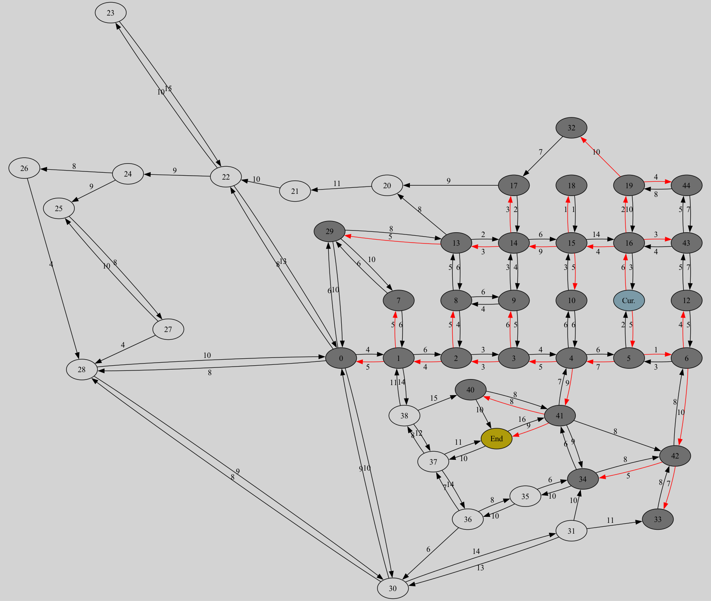

Project Description
This project demonstrates shortest path algorithms on a graph. Click the buttons to generate an updated graph using your chosen algorithm: Dijkstra, A*, or Multi-Threaded A*. The image is generated dynamically from C++ programs running on the server.